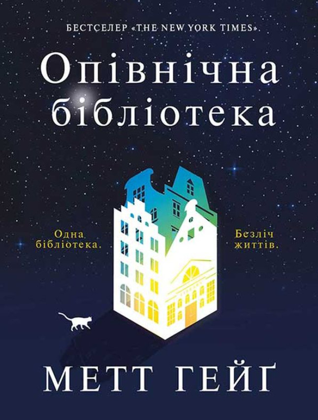
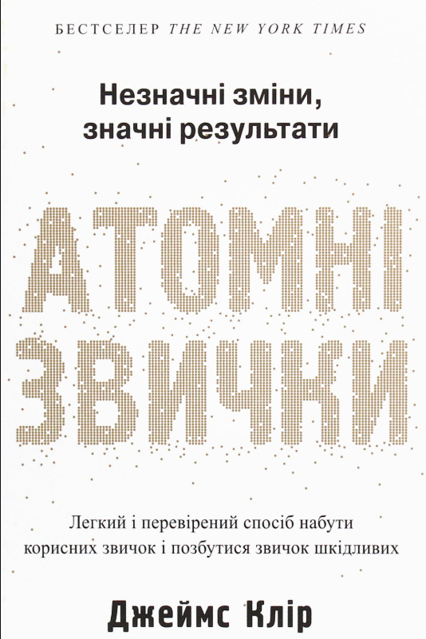
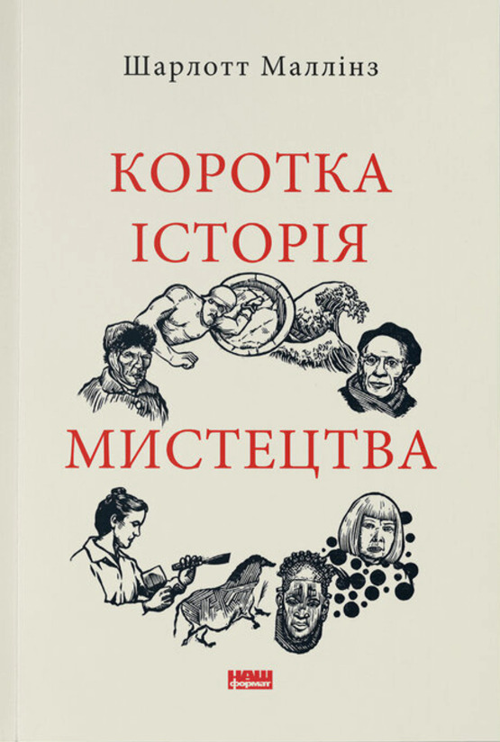

1,284
Усього видач
Усі видання, автори, читачі та записи про видачі в одному місці.
1,284
Усього видач
148
Активні видачі
12
Прострочені видачі
Читач: Олівія Мартін
Видано: 10 жовт. 2025 · Повернути: 24 жовт. 2025
АктивнаЧитач: Джеймс Вілсон
Видано: 11 жовт. 2025 · Повернути: 25 жовт. 2025
АктивнаЧитач: Ноа Девіс
Видано: 04 жовт. 2025 · Повернути: 18 жовт. 2025
Прострочено
Автор: Рік Рубін · Доступно примірників: 4
Доступна
Автор: Метт Гейґ · Доступно примірників: 2
Доступна
Автор: Джеймс Клір · Доступно примірників: 0
Видана
Автор: Шарлотт Маллінз · Доступно примірників: 3
Доступна